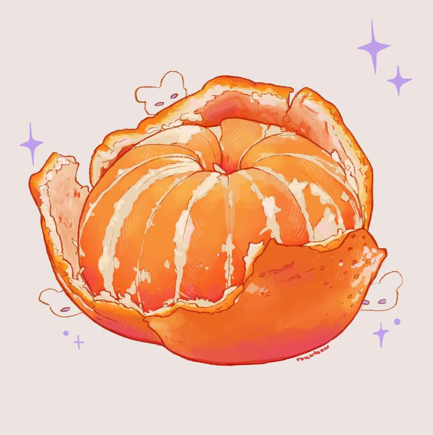

Primero, tiene un empaque inteligente que puedes pelar con una mano sin usar cuchillos;
segundo, es un incienso natural que le sube el ánimo a todo el salón con solo abrirla;
tercero, es pura hidratación, perfecta para cuando tienes sed pero quieres algo con más
'flow' que el agua; y cuarto, cada gajito viene con fibra extra que ayuda a tu sistema a funcionar
como un reloj. ¡Es la merienda definitiva: rica, portátil y anti-estrés!
✿ Tienen muchísima Vitamina C, lo que ayuda a que tus defensas estén listas para pelear contra cualquier virus en el colegio.
✿ Gracias a sus antioxidantes, ayudan a que tu piel se vea más sana y radiante. ¡Es belleza desde adentro!
✿ Aunque no lo creas, tienen calcio y magnesio, fundamentales para que crezcas fuerte.
Querido Lector, esta parte te la explicaré con una historia:
Hace un tiempo, muy lejos de aquí existía un reino inhumano vano y vil.
La princesa Mandarina, de 14 años, caprichosa e infantil...